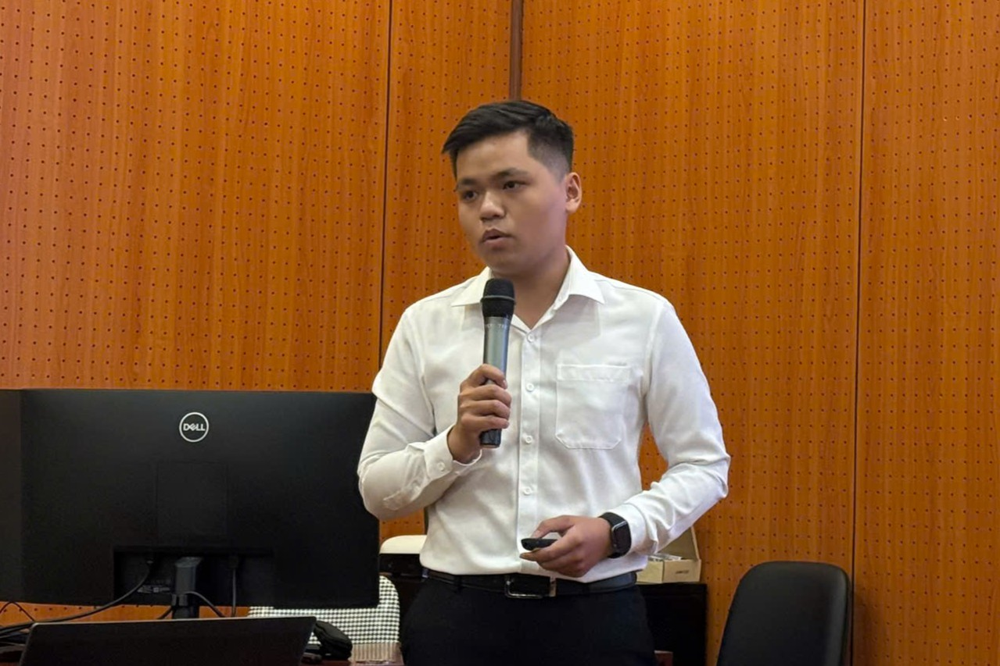
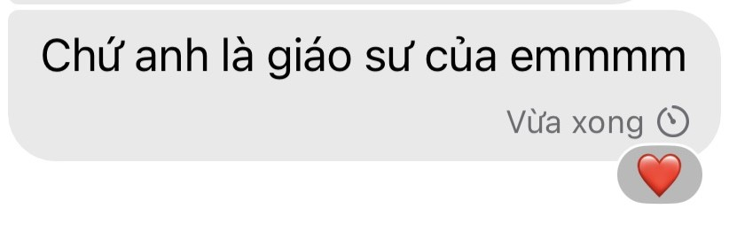

Happy 6-Month Anniversary
Cảm ơn em vì nửa năm qua


6 tháng qua - Không dài cũng chẳng ngắn
Em à,
Nếu những ngày qua là một giấc mơ, anh chẳng hề muốn thức dậy vì muốn mình chìm đắm trong giấc mơ ấy mãi 🥰
Ngày tốt nghiệp thạc sĩ, ai cũng nhớ thầy Giám đốc nói rằng hãy dùng tri thức vào những việc xứng đáng.
Anh nghĩ rằng tri thức của anh đang được dùng đúng cách, vì hình như cô ấy đang cười 😂
Nhưng thật ra, chúng ta mới chỉ rõ ràng được khoảng 2 tháng. Anh không nghĩ mình đã có nhiều kỷ niệm đến vậy.
Có lẽ thật khó để một "red flag về hưu" có thể có được một tình yêu trọn vẹn. Nhưng không vì thế mà anh ấy tỏ ra bất cần với mọi điều xung quanh,
kể cả khi anh ấy biết rằng có những điều chẳng thuộc về anh ấy 😌
Anh ấy vẫn đang bất chấp tất cả, anh ấy chẳng sợ điều gì, ngoài sợ mất cô ấy.
Có lẽ suốt nhiều năm nay, trái tim nguội lạnh ấy chưa bao giờ được rã đông. Anh ấy thấy bình yên đến lạ, mỗi khi ở cạnh cô ấy.
Ở đó, anh chẳng phải gồng mình để khẳng định bản thân với bất kỳ ai. Anh được tự do làm những gì mình thích, vì chính sự công nhận của cô là thứ khiến anh cảm thấy mình có giá trị trên cuộc sống này ❤️
Anh chẳng biết được rằng sau này chúng ta liệu còn nhớ đến những ngày tháng tươi đẹp này hay không. Anh chỉ biết tập trung làm những điều tốt nhất anh có thể làm.
Anh chẳng muốn tính toán thiệt hơn, cũng chẳng muốn so đo bất kỳ điều gì với em. Nhiều khi thấy em lo lắng, thấy em ốm, anh biết mình chẳng có gì ngoài những lời quan tâm sáo rỗng. Dù sao thì, anh cũng bất lực và đó cũng là những gì tốt nhất anh có thể làm.
Anh thấy mình tệ khi không thể ở cạnh em mọi lúc, nhưng anh cũng không hề xấu hổ vì anh đã dành trọn cho em những gì mình có 🥰
Và cái trang web này cũng vậy, nó chẳng mới, cũng chẳng biết nó có nhàm chán quá không, nhưng anh cũng không còn cách nào để nói ra những lời này.
Anh mong cho mọi thứ thật nhẹ nhàng, chỉ cần như vậy thôi thì anh có thể xử lý được mọi vấn đề. Anh biết rằng sẽ chẳng dễ dàng gì cho cả hai đứa trong giai đoạn tới,
nhưng anh luôn tin vào định mệnh, anh tin nghị lực của bản thân, và anh tin vào tình cảm của em, dù đôi lúc anh cũng thấy tủi thân lắm 😘
À, dạo này anh hay nghe bài này lắm, nên anh cũng cố gắng nhồi vào đây đoạn nhạc này. Nó là:
"Cause I never thought I’d feel,
All the things you made me feel,
Wasn’t looking for someone until you . . ."
Dịch ra là:
"Vì anh không bao giờ nghĩ anh sẽ cảm nhận được,
Tất cả những điều mà em đã khiến anh cảm thấy,
Anh chẳng hề muốn tìm một ai khác cho đến khi em đến bên anh . . ."
Cảm ơn em đã luôn mạnh mẽ, đã vì anh mà làm nhiều điều. Anh biết trăm ngàn món quà vật chất cũng chẳng bù lại được những gì em đã làm vì anh, vì em, và vì chúng ta.
Nhưng anh tin rằng cuộc sống đã đưa em đến với anh, chắc chắn sẽ không bao giờ đưa chúng ta đến nơi sóng gió. Em hãy mạnh mẽ, hãy tin ở anh, và hãy cho anh được quan tâm em nhé 🥺